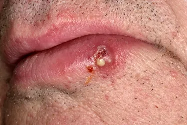
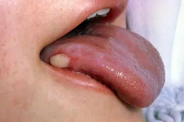
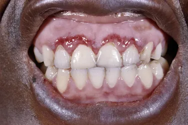

A sore on your lip or in your mouth that doesn't heal
A lump or thick patch inside your mouth or throat
White, red, or speckled (white and red) patches in your mouth or throat
Unexplained bleeding in your mouth
Unexplained pain or numbness in your mouth or throat
Chronic sore throat, or a feeling that something is caught in the back of your throat
Trouble chewing or swallowing, speaking, or moving your jaw or tongue
Hoarseness or change in your voice
Swelling, pain, or stiffness in your jaw
A lump in your neck
Ear pain
A change in the way your teeth fit together, or loose teeth (if you wear dentures, they might be uncomfortable or hard to put in)
Dramatic weight loss
Chronic bad breath
If you notice any of these changes, and they last more than 2 weeks, let your dentist or doctor know.
What does oral cancer look like?
On your lip, oral cancer often looks like a cold sore.
You may notice a white or red spot if you have light-colored skin.
The sore may look dark brown or gray on dark skin. It may be bloody or crusty.
Inside your mouth, oral cancer may look like a white or red spot on your gums,
tongue, inside of your lips or cheeks, roof of your mouth, or under your tongue.
It resembles a canker sore but doesn't hurt as much.
Oral cancer may also appear as a lump on your gum or other parts of your mouth.



Lip cancer can look like a sore that doesn't heal.
Oral cancer on your tongue or on the inside of your cheeks or lips can look like a canker sore.